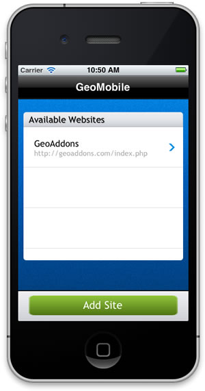
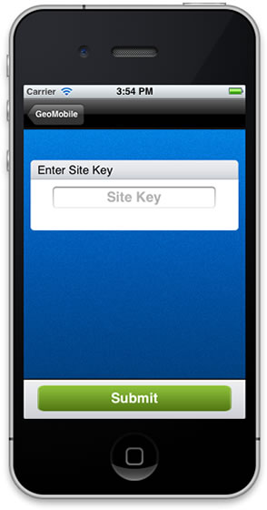
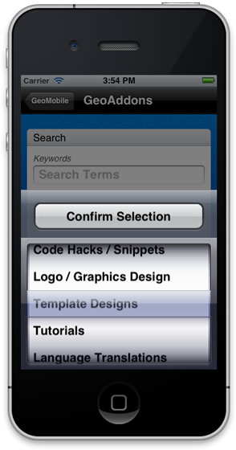

Mobile API Add On


Personal Price: $249 Setup
- Installed FREE with GeoCore
- Easy Activation

- GeoProducts v6.0.4 or later
- Windows Servers
- Unix / Linux Servers

Add On Highlights
Specs:- Version 1.0.1
- requires Ioncube
- Site Browsing
- Listing Search
- Category Search
- Contact Seller
- Listing Details
- Browse Listing Photos
- Shared app option
- Personal app option
The Mobile API offers you the ability to let your customers browse your site using a mobile application that can be downloaded to the user's smart phone. Currently the addon works with the GeoMobile iPhone App, which is developed and maintained in-house. In the future we plan to create apps for other mobile devices. These apps will be integrated into this same Add On.
We are pleased to announce that the highly anticipated GeoMobile iPhone App is ready to use on your site! We have 2 options available. You can either use the GeoMobile iPhone app, or get your very own personal iPhone app. There 2 main parts include: the Mobile API Addon, this is the part you download from the client area on our site and install in your website using our GeoCore software. The second part is the iPhone app itself. The iPhone app is what your visitors will download from the app store to use on their iPhones.
If you choose to simply use our GeoMobile App, you will supply your visitors with your unique Site Key. When a person opens our GeoMobile Iphone app they have the option to enter a specific websites key. When they enter your Site Key the Iphone app then connects directly to your site only.
If you choose to have our GeoMobile Iphone App personalized, you will get to choose the branding(your logo), colors, and verbiage. Once the personalization is complete, the App is submitted to Apple as a unique app only for your website. Once approved you can then supply the app to your visitors and this Iphone App will only connect to your site and there is no need for a Site Key.
1 - Customers choosing this option will need to enroll in Apple's iOS Developer Program.
Notice the GeoMobile App icon in the left image below. Immediately after launch, it will show the splash screen for a second or two:
Then the first page will appear. This has a saved, scrollable list of all sites that this particular user has used the app to visit:

To add a new site to the list, the user then pushes the "Add Site" button, which takes them to this screen:

After entering the Site Key, the user is taken back to the initial landing page. If the entered key is valid, the corresponding site will be added to the list. Otherwise, the user will be shown an error message detailing what went wrong
When the user selects a site, he is shown the search form, where he may optionally enter search keywords and select a category to search in:

The next screen is search results. The table scrolls up and down, and buttons at the bottom toggle between pages:

The final listing details screen is next. The entire page scrolls up and down, and the "description" box contents also scroll to show the entire listing description. On the "Seller Info" tab, phone numbers, street addresses, and email addresses are automatically linked (so tapping the phone number automatically places a call, or the address opens a map to that location):
The All Images button leads to an image viewer that behaves like the device's native Photos app: swipe between images, pinch-or-double-tap-to-zoom, captions, easily share images with friends:
The Contact Seller button opens up an interface that behaves like the device's native Mail app and allows the viewer to easily send an email to the listing's owner: